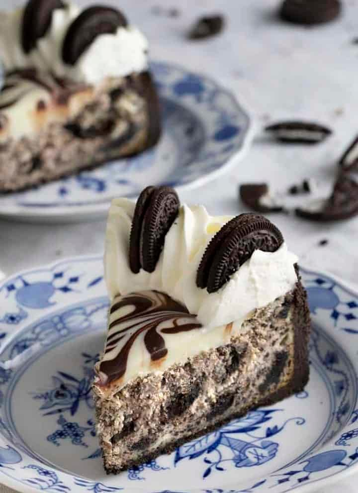

Galletitas de Avena y pasas
Ingredientes
- 1 1/2 tazas de harina para todo uso (180 g)
- 3/4 cucharadita de bicarbonato de sodio
- 1/4 cucharadita de polvo para hornear
- 1/4 cucharadita de polvo para hornear
- 1/2 cucharadita de sal
- 1 cucharadita de canela molida
-
1 taza de mantequilla sin sal a temperatura ambiente (226 g)
- 1 taza de azúcar moreno claro envasada (220 g)
- 1/2 taza de azúcar granulada (100g)
- 2 huevos grandes
- 2 cucharaditas de extracto de vainilla
-
2 1/2 tazas de copos de avena a la antigua (280 g)
- 1 taza de pasas (u otras mezclas) (160 g)
Preparacion
-
En un tazón mediano, mezcle la harina, el bicarbonato de sodio, el
polvo para hornear, la sal y la canela.
-
En un tazón grande para mezclar o en el tazón de una batidora de
pie equipada con el accesorio de paleta, combine la mantequilla
con ambos azúcares. Batir a velocidad media hasta que esté suave y
esponjoso, aproximadamente 3 minutos.
-
Reduzca la velocidad a baja. Agrega los huevos y la vainilla y
bate hasta que estén bien mezclados, aproximadamente 1 minuto.
Agrega la mezcla de harina y bate hasta que esté casi combinado.
Agrega la avena y las pasas. Forme bolas del tamaño de 2
cucharadas con la masa, cubra y enfríe durante 1 hora o hasta 72
horas.
-
Precaliente el horno a 350°F. Forre dos bandejas para hornear con
papel pergamino.
-
Coloque las bolas de masa a una distancia de aproximadamente 2
pulgadas sobre las bandejas para hornear forradas con papel
pergamino.
-
Hornee durante 12 a 14 minutos, o hasta que las galletas estén
doradas en los bordes pero aún suaves en el centro. (Los centros
aún deben verse húmedos y brillantes, pero se asentarán una vez
que se enfríen). Deje enfriar en los moldes durante unos minutos,
luego transfiéralo a una rejilla y déjelo enfriar por completo.
Cheesecake de Oreo

Ingredientes
Para la corteza
- 26 galletas Oreo
-
1/4 taza de mantequilla sin sal derretida (y más si es
necesario) (56 g)
Para la tarta de queso
-
3 bloques (8 onzas/226 g) de queso crema a temperatura
ambiente
- 1 taza de azúcar granulada (200g)
- 1/2 cucharadita de sal
-
1/2 taza de crema agria a temperatura ambiente
- 1 cucharada de extracto de vainilla
- 3 huevos grandes a temperatura ambiente
-
1 yema de huevo grande a temperatura ambiente
- 3 cucharadas de harina para todo uso
- 12 galletas Oreo trituradas
- 12 galletas Oreo picadas en trozos grandes
Para la ganache de chocolate blanco
-
1 taza de chocolate blanco finamente picado (175g)
- 1/3 taza de crema espesa (80 ml)
Para la ganache de chocolate amargo
-
2 cucharadas de chocolate semidulce finamente picado (20g)
- 1 cucharada de crema espesa
Para la crema batida
-
1 taza de crema para batir espesa fría (240 ml)
- 1/4 taza de azúcar en polvo (30g)
- 1 cucharadita de extracto de vainilla
Para el armado
Preparacion
Corteza
- Precaliente el horno a 350F.
-
Añade las galletas Oreo a tu procesador de alimentos y pulsa
hasta que se rompan en trozos pequeños. Vierta la mantequilla
derretida mientras pulsa el procesador. Retire las cuchillas y use
una espátula para mezclar la mantequilla por completo. Si las
migajas no se mantienen juntas al exprimirlas, agregue una
cucharada adicional de mantequilla derretida a la vez hasta que lo
hagan. (Consulte los Consejos profesionales para obtener
instrucciones sobre cómo preparar esto sin un procesador o
batidora de pie).
-
Transfiera la mezcla a su molde desmontable y extiéndala con una
espátula para que las migas se distribuyan uniformemente en el
fondo y también hacia los lados. Presione hasta obtener una capa
plana con un vaso alto e intente compactar el lado para que
mantenga su forma después del corte. Hornee durante unos 10
minutos a 350 o hasta que esté fragante. Retirar del horno,
reservar.
Relleno
-
Triture unas 12 galletas Oreo a mano o en su procesador de
alimentos y luego reserve. Pica 12 Oreos más, puedes cortarlas en
cuartos o simplemente darles un corte muy tosco. reservar también.
-
Agregue el queso crema a TEMPERATURA AMBIENTE, el azúcar y la sal
a una batidora de pie equipada con un accesorio para batir, luego
tamice las tres cucharadas de harina y mezcle a velocidad media
hasta obtener la crema. Raspe el tazón y mezcle hasta que esté
completamente homogéneo.
-
Agregue la crema agria y el extracto de vainilla, mezcle bien y
luego agregue los huevos y las yemas uno a la vez, dejando que
cada uno se incorpore antes de agregar el siguiente. Raspe el
tazón y mezcle hasta que esté completamente suave.
-
Incorpora las galletas Oreo trituradas y asegúrate de raspar el
tazón a medida que avanzas!
-
Vierta un tercio de la masa en el molde desmontable. Alise hasta
el borde y luego espolvoree algunas de las Oreos picadas. Agregue
otro tercio de la masa suave y espolvoree más galletas picadas,
luego agregue la última capa de masa y alise.
-
Coloque el molde desmontable en una fuente para hornear grande o
en una bandeja para hornear (esto asegura que no haya fugas y que
sea más fácil sacarlo del horno).
-
Hornee a 350F durante 10 minutos, luego reduzca la temperatura a
300F y hornee otros 50 minutos o hasta que el borde del pastel
esté firme pero el centro aún se tambalee. Apague el horno pero
deje la puerta cerrada y deje reposar el pastel durante media hora
más en el horno. Retirar del horno y dejar enfriar a temperatura
ambiente, luego cubrir con una toalla o papel toalla y dejar
enfriar durante la noche. Puede disfrutar la tarta de queso
después de unas 3 o 4 horas de refrigeración, pero es MUCHO más
fácil de cortar si la ha dejado enfriar durante la noche.
Las ganaches
Harás dos tandas de ganache, una blanca y otra oscura. Se pueden
hacer a baño maría o puedes usar el microondas. Si está usando el
microondas, agregue los chocolates en tazones separados y luego
métalos en el microondas a media potencia en unas ráfagas de 20 a 30
segundos. Vierta la crema caliente encima y mezcle y reserve. Si
quedan grumos rebeldes, mezcle un poco más de crema y aplique un
poco más de calor hasta que quede suave. Vierta la ganache de
chocolate blanco sobre el pastel y alise cerca del borde. Agregue
cucharadas pequeñas de ganache de chocolate amargo y luego use una
brocheta o un cuchillo pequeño para mezclarlas. Transfiera al
refrigerador para que se enfríe mientras prepara la crema batida.
La crema batida
-
Agregue la crema fría, el azúcar en polvo y la vainilla al tazón
de su batidora de pie equipada con un accesorio para batir y bata
a velocidad alta hasta que se formen picos suaves. Es mejor usar
un recipiente frío y sacarlo directamente del congelador, pero la
temperatura ambiente también funciona.
-
Transfiera la crema batida a una manga pastelera provista de una
punta de estrella cerrada grande y coloque el borde del pastel en
forma de sacacorchos apretado. Corta 7 galletas Oreo por la mitad
y colócalas en la crema batida con el lado derecho hacia abajo.